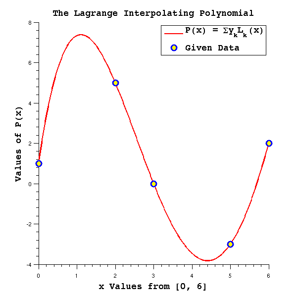
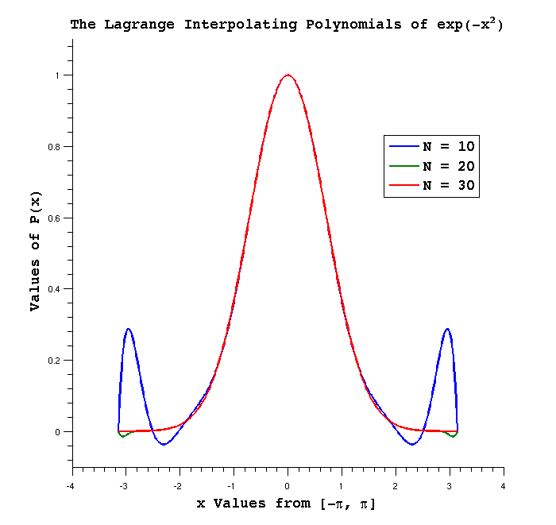
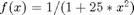
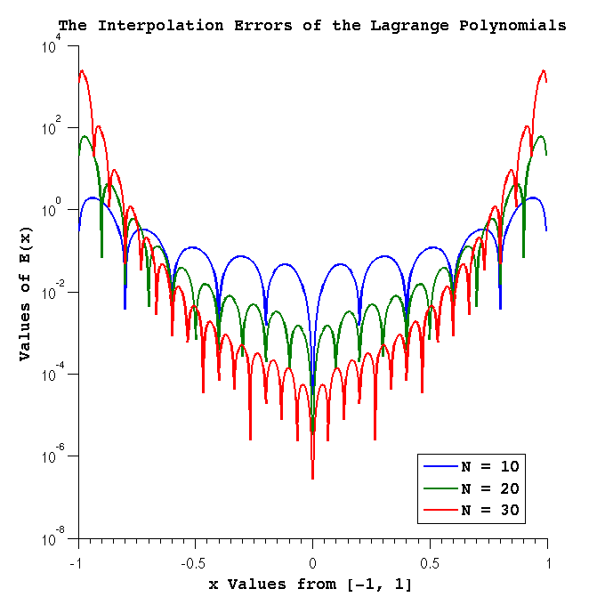
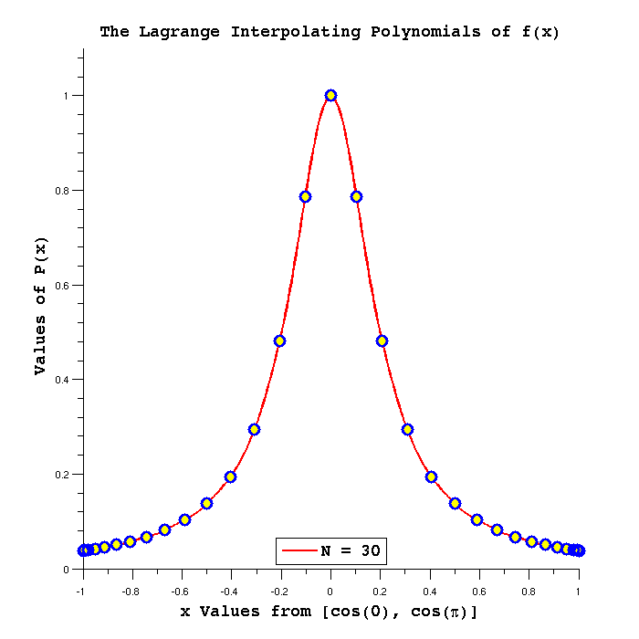

Contents
- MATH 3315 Project 3 - Interpolation - By Zack Fout
- Part 1. Computing Interpolating Polynomials with Lagrange Polynomials
- Part 2 the exponential function
- Part 3. Interpolation of f(x) = 1/(1 + 25 *x^2)
- Part 4. Interpolation of f(x) = 1/(1 + 25 *x^2) Over a Second Interval
- Part 5. Interpolation of f(x) = 1/(1 + 25 *x^2) Continued
% % Title: proj3.m % Summary: driver m-script for Project 3 for MATH 3315 % Author: Zack Fout % Version: 1.1 % Last Modified: 04/06/2014 % Notes: Completed code for Part 1, need to add comments %
MATH 3315 Project 3 - Interpolation - By Zack Fout
Part 1. Computing Interpolating Polynomials with Lagrange Polynomials
Interpolation is a numerical method of constructing new data points within the range of a discrete set of known data points in order to approximate an analytic function. One such method of interpolation is the Lagrange approximation which approximates an analytic function with a sum of polynomials. An example of the Lagrange approximation may be seen below:
xNodes = [0, 2, 3, 5, 6]; % x values of given data points fNodes = [1, 5, 0, -3, 2]; % y values of given data points x = linspace(0, 6, 500); % range of the approximation y = lagrange(x, xNodes, fNodes); % determines the lagrange approximation % formatting figure('Units', 'pixels', ... 'Position', [100 100 600 600]); plot(x, y, ... 'LineStyle', '-', ... 'LineWidth', 2, ... 'Color', 'r'); hold on; plot(xNodes, fNodes, 'bo', ... 'LineWidth', 3, ... 'MarkerSize', 10, ... 'MarkerEdgeColor', 'b', ... 'MarkerFaceColor', 'y'); hTitle = title('The Lagrange Interpolating Polynomial'); hXLabel = xlabel('x Values from [0, 6]'); hYLabel = ylabel('Values of P(x)'); hLegend = legend({'P(x) = {\Sigma}{y_k}{L_k(x)}', 'Given Data'}, ... 'Location', 'northeast'); set([hXLabel, hYLabel, hTitle, hLegend], ... 'FontName', 'Courier 10 Pitch', ... 'FontSize', 14, ... 'FontWeight', 'bold'); set(gca, ... 'Box', 'off', ... 'TickDir', 'out', ... 'TickLength', [.02 .02], ... 'XMinorTick', 'on', ... 'YMinorTick', 'on');
As you can see by visually inspecting the graph, the Lagrange appoximation estimates an analytic function that passes through the provided data points.
Part 2 the exponential function
Now, the Lagrange interpolation method will be used to approximate the function  over the interval
over the interval ![$$[-{\pi}, \pi]$](proj3_eq98524.png) using N+1 equally spaced data points. The approximations using N = 10, N = 20, and N = 30 data points are shown below:
using N+1 equally spaced data points. The approximations using N = 10, N = 20, and N = 30 data points are shown below:
x = linspace(-pi, pi, 500); xNodes1 = linspace(-pi, pi, 11); % x values of equally spaced nodes for k=1:11 fNodes1(k) = exp(-power(xNodes1(k), 2)); % y values of nodes end lagrange1 = lagrange(x, xNodes1, fNodes1); % compute lagrangre polynomial xNodes2 = linspace(-pi, pi, 21); % x values of equally spaced nodes for k=1:21 fNodes2(k) = exp(-power(xNodes2(k), 2)); % y values of nodes end lagrange2 = lagrange(x, xNodes2, fNodes2); % compute lagrangre polynomial xNodes3 = linspace(-pi, pi, 31); % x values of equally spaced nodes for k=1:31 fNodes3(k) = exp(-power(xNodes3(k), 2)); % y values of nodes end lagrange3 = lagrange(x, xNodes3, fNodes3); % compute lagrangre polynomial % formatting figure('Units', 'pixels', ... 'Position', [100 100 700 700]); hPlot1 = plot(x, lagrange1, x, lagrange2, x, lagrange3); set(hPlot1, ... 'LineStyle', '-', ... 'LineWidth', 2); ylim([-0.1, 1.1]); hold on; hTitle1 = title('The Lagrange Interpolating Polynomials of exp(-x^2)'); hXLabel1 = xlabel('x Values from [-{\pi}, \pi]'); hYLabel1 = ylabel(' Values of P(x)'); hLegend1 = legend('N = 10', 'N = 20', 'N = 30', 'Location', 'best'); set([hXLabel1, hYLabel1, hTitle1, hLegend1], ... 'FontName', 'Courier 10 Pitch', ... 'FontSize', 14, ... 'FontWeight', 'bold'); set(gca, ... 'Box', 'off', ... 'TickDir', 'out', ... 'TickLength', [.02 .02], ... 'XMinorTick', 'on', ... 'YMinorTick', 'on');
As you can see by visually inspecting the graph, the Lagrange polynomials become more accurate approximations of the analytic function with an increasing number of given data points. An examination of the absolute errors on the analytic function and each approximation yields further useful information about the approximation. The logarithmic plot of these errors over the given interval shown below describe the difference between the approximated values of the analytic function and the actual values:
for k=1:500 % compute the absolute errors for each polynomial err1(k) = abs(exp(-power(x(k), 2)) - lagrange1(k)); err2(k) = abs(exp(-power(x(k), 2)) - lagrange2(k)); err3(k) = abs(exp(-power(x(k), 2)) - lagrange3(k)); end % formatting figure('Units', 'pixels', ... 'Position', [100 100 700 700]); hSemilogy = semilogy(x, err1, x, err2, x, err3); set(hSemilogy, ... 'LineStyle', '-', ... 'LineWidth', 2); hold on; hTitle2 = title('The Interpolation Errors of the Lagrange Polynomials'); hXLabel2 = xlabel('x Values from [-{\pi}, \pi]'); hYLabel2 = ylabel('Values of E(x)'); hLegend2 = legend('N = 10', 'N = 20', 'N = 30', 'Location', 'best'); set([hXLabel2, hYLabel2, hTitle2, hLegend2], ... 'FontName', 'Courier 10 Pitch', ... 'FontSize', 14, ... 'FontWeight', 'bold'); set(gca, ... 'Box', 'off', ... 'TickDir', 'out', ... 'TickLength', [.02 .02], ... 'XMinorTick', 'on', ... 'YMinorTick', 'on', ... 'FontSize', 14);

The graph of these error functions illuminate two useful inferences. The first is that the approximations become more accurate toward the interior of the interval as is illustrated by the general trend of very small errors around x = 0 from both the left and right sides of the graph. The other inference is that approximations with a greater number of given data points result in smaller errors on the analytic function, as is illustrated by the general trend down toward 10^-16 with each function with increasing N.
Part 3. Interpolation of f(x) = 1/(1 + 25 *x^2)
Now, the Lagrange interpolation method will be used to approximate the function  over the interval ![$$[-1, 1]$](proj3_eq12537.png) using N+1 equally spaced data points. The approximations using N = 10, N = 20, and N = 30 data points are shown below:
using N+1 equally spaced data points. The approximations using N = 10, N = 20, and N = 30 data points are shown below:
x1 = linspace(-1, 1, 500); xNodes4 = linspace(-1, 1, 11); % x values of equally spaced nodes for k=1:11 fNodes4(k) = 1 ./ (1 + (25 * power(xNodes4(k), 2))); % y values of nodes end lagrange4 = lagrange(x1, xNodes4, fNodes4); % compute lagrangre polynomial xNodes5 = linspace(-1, 1, 21); % x values of equally spaced nodes for k=1:21 fNodes5(k) = 1 ./ (1 + (25 * power(xNodes5(k), 2))); % y values of nodes end lagrange5 = lagrange(x1, xNodes5, fNodes5); % compute lagrangre polynomial xNodes6 = linspace(-1, 1, 31); % x values of equally spaced nodes for k=1:31 fNodes6(k) = 1 ./ (1 + (25 * power(xNodes6(k), 2))); % y values of nodes end lagrange6 = lagrange(x1, xNodes6, fNodes6); % compute lagrangre polynomial % formatting figure('Units', 'pixels', ... 'Position', [100 100 700 700]); hPlot2 = plot(x1, lagrange4, x1, lagrange5, x1, lagrange6); set(hPlot2, ... 'LineStyle', '-', ... 'LineWidth', 2); ylim([0.0, 1.2]); hTitle3 = title('The Lagrange Interpolating Polynomials of f(x)'); hXLabel3 = xlabel('x Values from [-1, 1]'); hYLabel3 = ylabel(' Values of P(x)'); hLegend3 = legend('N = 10', 'N = 20', 'N = 30', 'Location', 'south'); set([hXLabel3, hYLabel3, hTitle3, hLegend3], ... 'FontName', 'Courier 10 Pitch', ... 'FontSize', 14, ... 'FontWeight', 'bold'); set(gca, ... 'Box', 'off', ... 'TickDir', 'out', ... 'TickLength', [.02 .02], ... 'XMinorTick', 'on', ... 'YMinorTick', 'on');

As you can see by visually inspecting the graph, the Lagrange polynomials become more accurate approximations of the analytic function  with an increasing number of given data points. Note that toward the center of the interval the approximations are good, while at the extremes of the interval the approximations are very poor. An examination of the absolute errors on the analytic function and each approximation yields further useful information about the approximation. The logarithmic plot of these errors over the given interval shown below describe the difference between the approximated values of the analytic function and the actual values:
with an increasing number of given data points. Note that toward the center of the interval the approximations are good, while at the extremes of the interval the approximations are very poor. An examination of the absolute errors on the analytic function and each approximation yields further useful information about the approximation. The logarithmic plot of these errors over the given interval shown below describe the difference between the approximated values of the analytic function and the actual values:
for k=1:500 % compute the absolute errors for each polynomial err4(k) = abs(1 ./ (1 + (25 * power(x1(k), 2))) - lagrange4(k)); err5(k) = abs(1 ./ (1 + (25 * power(x1(k), 2))) - lagrange5(k)); err6(k) = abs(1 ./ (1 + (25 * power(x1(k), 2))) - lagrange6(k)); end % formatting figure('Units', 'pixels', ... 'Position', [100 100 700 700]); hSemilogy1 = semilogy(x1, err4, x1, err5, x1, err6); set(hSemilogy1, ... 'LineStyle', '-', ... 'LineWidth', 2); hold on; hTitle4 = title('The Interpolation Errors of the Lagrange Polynomials'); hXLabel4 = xlabel('x Values from [-1, 1]'); hYLabel4 = ylabel('Values of E(x)'); hLegend4 = legend('N = 10', 'N = 20', 'N = 30', 'Location', 'best'); set([hXLabel4, hYLabel4, hTitle4, hLegend4], ... 'FontName', 'Courier 10 Pitch', ... 'FontSize', 14, ... 'FontWeight', 'bold'); set(gca, ... 'Box', 'off', ... 'TickDir', 'out', ... 'TickLength', [.02 .02], ... 'XMinorTick', 'on', ... 'YMinorTick', 'on', ... 'FontSize', 14);
The graph of these error functions show that the errors of the approximations are clustered closer together for than they are for . However, the errors on are no smaller than 10^-8 whereas the errors on are no smaller than 10^-16. Therefore, these approximations of are significantly less accurate than the approximations of , which could result in nontrivial errors in floating point operations.
Part 4. Interpolation of f(x) = 1/(1 + 25 *x^2) Over a Second Interval
Now, the Lagrange interpolation method will be used to approximate the function over the interval ![$$[cos(0), cos(\pi)]$](proj3_eq91853.png) using N+1 equally spaced data points. The approximations using N = 10, N = 20, and N = 30 data points are shown below:
using N+1 equally spaced data points. The approximations using N = 10, N = 20, and N = 30 data points are shown below:
x2 = cos(linspace(0, pi, 500)); xNodes7 = cos(linspace(0, pi, 11)); % x values of equally spaced nodes for k=1:11 fNodes7(k) = 1 ./ (1 + (25 * power(xNodes7(k), 2))); % y values of nodes end lagrange7 = lagrange(x2, xNodes7, fNodes7); % compute lagrangre polynomial xNodes8 = cos(linspace(0, pi, 21)); % x values of equally spaced nodes for k=1:21 fNodes8(k) = 1 ./ (1 + (25 * power(xNodes8(k), 2))); % y values of nodes end lagrange8 = lagrange(x2, xNodes8, fNodes8); % compute lagrangre polynomial xNodes9 = cos(linspace(0, pi, 31)); % x values of equally spaced nodes for k=1:31 fNodes9(k) = 1 ./ (1 + (25 * power(xNodes9(k), 2))); % y values of nodes end lagrange9 = lagrange(x2, xNodes9, fNodes9); % compute lagrangre polynomial % formatting figure('Units', 'pixels', ... 'Position', [100 100 700 700]); hPlot3 = plot(x2, lagrange7, x2, lagrange8, x2, lagrange9); set(hPlot3, ... 'LineStyle', '-', ... 'LineWidth', 2); ylim([0.0, 1.1]); hTitle5 = title('The Lagrange Interpolating Polynomials of f(x)'); hXLabel5 = xlabel('x Values from [cos(0), cos(\pi)]'); hYLabel5 = ylabel(' Values of P(x)'); hLegend5 = legend('N = 10', 'N = 20', 'N = 30', 'Location', 'south'); set([hXLabel5, hYLabel5, hTitle5, hLegend5], ... 'FontName', 'Courier 10 Pitch', ... 'FontSize', 14, ... 'FontWeight', 'bold'); set(gca, ... 'Box', 'off', ... 'TickDir', 'out', ... 'TickLength', [.02 .02], ... 'XMinorTick', 'on', ... 'YMinorTick', 'on');

As you can see by visually inspecting the graph, the Lagrange polynomials become more accurate approximations of the analytic function with an increasing number of given data points. Note that toward the center of the interval the approximations are good, while at the extremes of the interval the approximations are very poor. An examination of the absolute errors on the analytic function and each approximation yields further useful information about the approximation. The logarithmic plot of these errors over the given interval shown below describe the difference between the approximated values of the analytic function and the actual values:
for k=1:500 % compute the absolute errors for each polynomial err7(k) = abs(1 ./ (1 + (25 * power(x1(k), 2))) - lagrange7(k)); err8(k) = abs(1 ./ (1 + (25 * power(x1(k), 2))) - lagrange8(k)); err9(k) = abs(1 ./ (1 + (25 * power(x1(k), 2))) - lagrange9(k)); end % formatting figure('Units', 'pixels', ... 'Position', [100 100 700 700]); hSemilogy2 = semilogy(x2, err7, x2, err8, x2, err9); set(hSemilogy2, ... 'LineStyle', '-', ... 'LineWidth', 2); hold on; hTitle5 = title('The Interpolation Errors of the Lagrange Polynomials'); hXLabel5 = xlabel('x Values from [cos(0), cos(\pi)]'); hYLabel5 = ylabel('Values of E(x)'); hLegend5 = legend('N = 10', 'N = 20', 'N = 30', 'Location', 'best'); set([hXLabel5, hYLabel5, hTitle5, hLegend5], ... 'FontName', 'Courier 10 Pitch', ... 'FontSize', 14, ... 'FontWeight', 'bold'); set(gca, ... 'Box', 'off', ... 'TickDir', 'out', ... 'TickLength', [.02 .02], ... 'XMinorTick', 'on', ... 'YMinorTick', 'on', ... 'FontSize', 14);

The graph of these error functions show that the errors of the approximations are clustered closer together for than they are for . However, the errors on over [-1, 1] are no smaller than 10^-6 whereas the errors on are no smaller than 10^-8. over [cos(0), cos(\pi)]. Therefore, these approximations of are significantly less accurate than the previous approximations of , which could result in even more nontrivial errors in floating point operations.
Part 5. Interpolation of f(x) = 1/(1 + 25 *x^2) Continued
Here, we will plot the aproximation of f(x) = 1/(1 + 25 *x^2) over the interval [cos(0), cos(\pi)] with the Lagrange polynomial where N = 30 and the given data points. The results are shown below:
figure('Units', 'pixels', ... 'Position', [100 100 700 700]); hPlot4 = plot(x2, lagrange9); set(hPlot4, ... 'LineStyle', '-', ... 'LineWidth', 2, ... 'Color', 'r'); ylim([0.0, 1.1]); hold on; plot(xNodes9, fNodes9, 'bo', ... 'LineWidth', 3, ... 'MarkerSize', 10, ... 'MarkerEdgeColor', 'b', ... 'MarkerFaceColor', 'y'); hTitle6 = title('The Lagrange Interpolating Polynomials of f(x)'); hXLabel6 = xlabel('x Values from [cos(0), cos(\pi)]'); hYLabel6 = ylabel(' Values of P(x)'); hLegend6 = legend('N = 30', 'Location', 'south'); set([hXLabel6, hYLabel6, hTitle6, hLegend6], ... 'FontName', 'Courier 10 Pitch', ... 'FontSize', 14, ... 'FontWeight', 'bold'); set(gca, ... 'Box', 'off', ... 'TickDir', 'out', ... 'TickLength', [.02 .02], ... 'XMinorTick', 'on', ... 'YMinorTick', 'on');
Here you can see that the majority of the nodes are clustered toward the extremes of the interval, while toward the center of the interval the nodes are sparsely populated.